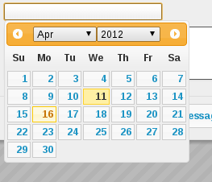

2 Getting Started

On starting ASM for the first time, you will be prompted to log in to the system. The default username is “user” with the password “letmein”. If there are no animals in the database, ASM will remind you of these defaults in the dialog.

Once logged in, ASM's home screen will appear. Across the top, a menu bar is used to navigate the system.
At the top right, a keyword search box allows you to quickly locate any type of record within ASM and the user menu shows the currently logged in user, the locale and allows user specific actions to be taken (changing the current user's password, logging out of the system).
The default landing page shows recently changed animals, alerts for any actions that need to be taken, current diary tasks to be performed today, any messages from other users and news from the ASM website. Additionally, this pane will show a series of user-configurable quicklinks for quickly getting to different areas of the system.
2.1 Menus and Shortcuts

You open screens in ASM by navigating and clicking on menu items. There are three types of menu in the bar.
-
Top-Level menus: These are the words you see across the very top of the menu, such as ASM and Move. These menus drop down to reveal other options.
-
Menu Commands: These are the menu commands that actually do something. Eg: Find Animal is a menu command - it calls up the Find Animal screen.
2.2 Shortcut Keys
Some of the most common menu commands can be actioned by pressing combinations of certain keys. These keys are known as shortcut keys or accelerators. Pressing these keys is the same as navigating the menu and clicking on them with the mouse.
If a menu command has a shortcut key, it will be displayed at the side of it in the menu. For example, the Add Animal option on the menu can be accessed by pressing ALT+SHIFT+N - this means you hold down the shift and alt keys together, and tap N. It is worth learning these as you will find them much quicker to use when you are proficient with the system.
There are some additional shortcut keys you can use (some depend on which browser you have):
-
CTRL+H will return to the home screen
-
CTRL+S will save the current screen (animal, person details, etc).
-
CTRL+R or F5 will reload the current screen.
-
CTRL+W will close the current browser tab
-
CTRL+A will select all items on screens that display a table with multiple items (eg: Foster book, Vaccination Book, etc).
-
Holding down CTRL while clicking a link will open that link in a new tab.
2.2.1 Dates

It is worth mentioning early on that Animal Shelter Manager has a keyboard user interface for dealing with dates (as well as the more usual calendar). Every field within the system where a date is expected, the following keyboard shortcuts can be used:
-
T - Today
-
Y – Today + 1 year
-
M – Today + 1 month
-
W – Today + 1 week
-
D – Today + 1 day
-
SHIFT + (YMWD) – Today less 1 year/month/week/day
-
CTRL+Cursor Keys move the date selector around (up/down is +/- one week)
-
CTRL+PgUp/PgDn go forwards and backwards 1 month.
2.2.2 Tables

ASM uses tables to display data throughout the application. You can sort any table in ascending order by clicking on the column heading you wish to sort on. If you click the column heading again, it will be sorted in descending order instead. Hold down shift while clicking to sort on multiple columns at the same time.
A system setting allows the table headers to float at the top when you scroll the screen if desired. In addition, if you need to select any items in a table, tickboxes will appear down the left hand side. Any actions you can take on selected items in a table will be via buttons above the table.
2.2.3 Initial Setup
Before doing anything else with your new ASM installation, you should now perform the initial configuration of ASM for your shelter. The steps are as follows:
-
If you want to use your own animal classifications, you can use the
Settings->Lookup Data->Animal Types to alter the standard ASM ones - ASM assumes your shelter deals with dogs and cats and wants to differentiate between stray and abandoned animals. After doing that, select your new defaults in the correct place on the defaults tab of the Settings->Options screen. -
Go to the Settings->Options->Details screen and enter your shelter's details. You can set all of the systemwide behaviours for ASM and control the format of generated animal codes from this screen as well.
-
Go to Settings->Lookup Data->Breeds - Remove any unwanted breeds and species from the database that your shelter does not deal with.
-
Go to Settings->Reports->Browse sheltermanager.com and install some reports.
-
Create usernames and passwords for your shelter staff in the Settings->System User Accounts screen. Once you have your own username and password, delete the default “user” user.